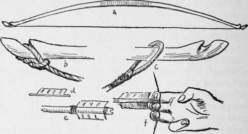
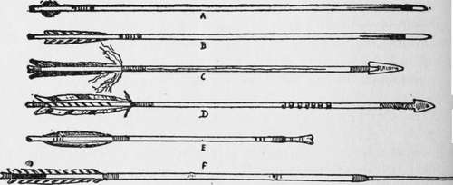
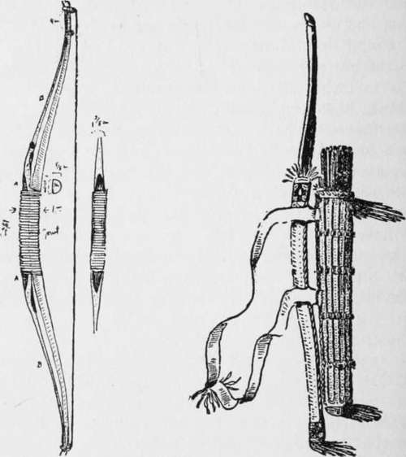
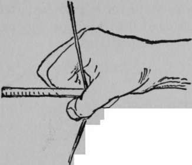

Indian Paints. Continued
Description
This section is from the book "The Book Of Woodcraft", by Ernest Thompson Seton. Also available from Amazon: The Book of Woodcraft.
Indian Paints. Continued
Arrows should be 25 inches long, and 3/8 of an inch thick. They are made of pine or ash. The Eastern Indians made them usually of arrow-wood or viburnum shoots.
Each should have a conical steel ferrule for head and three feathers to make it fly true. The feathers are lashed on.
a. The bow strung, b. The cord fast at the lower end. c. The cord with loop at upper end. d. Feather ready to tie on. e. Feathers lashed on. f. Holding.
Six Sample Arrows, Showing Different Feathers.
A is a far-flying steel-pointed bobtail, very good in wind. B is another very good arrow, with a horn point. This went even better than A if there were no wind. C is an Omaha war and deer arrow. Both heads and feathers are lashed on with sinew. The long tufts of down left on the feathers are to help in finding it again, as they are snow-white and wave in the breeze. The grooves on the shaft are to make the victim bleed more freely and be more easily tracked. D is another Omaha arrow with a peculiar owner's mark of rings carved in the middle. E is a bone-headed bird shaft made by the Indians of the Mackenzie River. F is a war arrow made by Geronimo, the famous Apache chief. Its shaft is three joints of a straight cane. The tip is of hard wood, and on that is a fine quartz point; all being lashed together with sinew.
Holding And Drawing
It is very important to begin shooting in correct form and never change from that if you wish to become a good shot.
Grasp the bow in the left hand. Put the arrow on the string with the right. Hook the first three fingers on the string one above, two below the arrow. The little finger and thumb do nothing, (f in upper cut, p. 480).
Stand perfectly upright, left side toward the target, the heels 12 inches apart and in exact line from the target. Hold the bow upright and the arrow against the left side of it, resting on the hand. Draw the cord till the head of the arrow touches the bow and the top of your thumb rests on the corner of your mouth. You must sight along the arrow for direction, but guess for elevation. Hold it one second.
Release the arrow by straightening your fingers and at the same time turn your hand back up, but keep the thumb tip at your mouth corner. Do not move the left hand a hair's-breadth till the arrow has struck.
begin practising at very short range and slowly increase up to the standard, forty yards.
Unstring the bow when not in use.
The Warbow Of The Penobscots
This warbow (Tong-bi) is as shown to me by Big Thunder, the Penobscot Chief, at Boston Sportsman's Show, December 12, 1900. He was then seventy-seven years of age, perfectly straight, and six feet four inches in height.
He said that the bow had been in his tribe for over two hundred years; fifty-five years ago it was put in his charge by his uncle, the late Chief John Nepta.
It is made of "hornbeam" in two pieces, loosely joined, with an auxiliary piece in front (AA), to which are attached two long thongs of caribou rawhide. This extra piece is bound to the arms of the main bow by a somewhat loose rawhide wrapping.
Penobscot warbow. Omaha bow, bowcase and quiver.
The bow is 5 feet 6 1/2 inches long, and pulls not more than 25 pounds, perhaps only 20. It seemed to me a very slow bow.
Yet the Chief told me it had killed many men and animals. He had recently shot a two-year-old moose with it.
The string is three strips of rawhide, two of them loosely twisted together, the third tightly wrapped around both.
The moose, he said, always lies down on a wound to get it next the earth, but thereby drives the arrow home.
Caribou rawhide, he claims, gets tighter when wet; and hornbeam practically never decays or loses its power with age.
The arrow he showed me was without feathers and had a stone head. The notch was very slight, showing that the pinch grip was necessary. It was 32 inches long, but the Penobscots made them up to 34 and 36 inches, usually with feathers. The grip by which he pulled was the Mongolian, as in the sketch.
That, he said, used to be the only one in use among his tribe, but recently they had used the grip known as the Secondary.
Scalps
Drawn from life. By Thunder's arrow grip 14 Dec, 1900, Boston. This manner he said was general among his people formerly, but of late they use the new (secondary) style.
In some tribes each brave wears a long tuft of black horsehair that answers as his scalp. The skin of this should be about one and a half inches across; it is furnished with a cord loop; the hair is as long as possible. This scalp is presented to the brave on entering the tribe. After he has promised obedience and allegiance and signed the roll the medicine man gives it to him, saying:
"This is your scalp. Treasure this as your honor. You may lose it without absolute disgrace, but not without some humiliation".
He can lose it only in an important competition, approved by the council, in which he stakes his scalp against that of some other brave. If he loses, he surrenders his tuft to the winner and goes tuftless - that is, he is dead until the council thinks proper to revive him by giving him a new scalp But he never gets back the old one, which remains the property of the winner for a teepee or other decoration.
A dead brave cannot vote or sit in council or take part in the competitions.
Indian Work
For all kinds of genuine Indian work, to order if need be, send to Mohank Lodge, Colony, Oklahoma.
Continue to:
Tags
bookdome.com, books, online, free, old, antique, new, read, browse, download